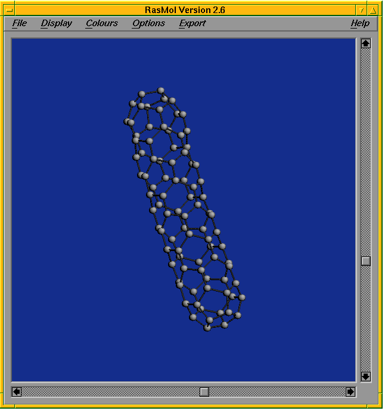

Up : Main
Prev : Introduction
Next : Main program loop
CaGe V0.3
Tutorial --- Tour de CaGe
Let's suppose you have started CaGe. If you do not know how to do
this, have a look at the README file which is provided
together
with CaGe. After you have started the program, a message appears.
After a few seconds either a window or the frame of a window appears. In the
first case new windows are placed automatically, in the second case you must
place every new window yourself by moving the frame (this is done by moving
the mouse) and pressing the left mouse button afterwards.
There are two windows which appear: The main window and the
selection window. The main window is titled "CaGe V0.3"
while
the selection window is just titled "CaGe".
Main window:
The main window will stay
on the screen as long as CaGe is running. You can always exit CaGe
by clicking the "Quit" button in the main window (clicking a button on
the display means that you press the left
mouse button while the mouse pointer is located on that button).
You should exit CaGe only this way.
You should never make use of the window options which are
offered by your window manager (close, delete, destroy...). When a
generation program is running, the main window provides some information
about the state in which the generation program is.
Selection window:
You can choose a graph generation program via the
selection window. All generation programs which are provided and the kind of
graphs which they generate are listed in
the selection window. Actually, there are five different programs which will
be discussed later. There is a little space between the third and the fourth
entry in the list because the last two programs are intended to
support not only chemical applications, but various tasks.
Let's choose the first program as an example. So we want to generate
fullerenes, and the program which does this is called fullgen.
As soon as
you click the "Fullerenes (fullgen)"--button, the selection window
disappears and another window appears which is called the option
window:
Here you can change some parameters which determine what kind
of
fullerenes shall be generated and where the output shall be sent to.
To change the parameters, different widget types are
supported.
One widget type you have already used is the button. By
clicking
a button you invoke a certain process (e.g. entering a new window). There are
some other types:
Slider:
A slider contains a button which can be moved
and a container
in which the button can be moved. By moving the
button you change the value of a parameter. This value is shown either above
the button or to the left of the container. To move the button, put the mouse
pointer on it, press the left mouse button and hold the left mouse button
while moving the mouse. To change the parameter value for the smallest
possible unit, put the mouse pointer on the container and press the left
mouse button. If the parameter value becomes smaller or bigger depends on the
position of the mouse pointer in relation to the slider button.
Checkbutton:
A checkbutton is a small light with a label at its right
side. The light can be either on (red) or off (grey). You can turn the light
on or off by clicking it. A checkbutton is used to mark something.
Entry:
An entry can be used to show text. You can change this text
by clicking the entry. In this case a cursor appears and the program accepts
keyboard input. If the text is long, then it might happen that the entry is too
small to show the whole text. But it is nevertheless there, it will not be cut.
Radiobutton:
Radiobuttons always appear in groups. They look like
checkbuttons, but the light is a rhombus instead of a square. Only one
radiobutton in each group can be switched on. Whenever you turn one radiobutton
on, all other radiobuttons in this group will be turned off automatically.
Label:
Labels are used to show text. If the text represents a parameter,
then it might change. But different to an entry the user cannot change the
text himself.
Most widgets that can be used interactively will highlight (with white colour)
whenever the mouse pointer is put on them. By pressing the left mouse button
you invoke the widget. For example, you do not need to put the mouse pointer
exactly on the checklight to invoke a checkbutton. It suffices to put the
pointer somewhere on the related label.
The parameters can be split into three categories:
Basic options:
In fullgen, there is only one basic option.
It is the number of vertices (atoms) each generated fullerene must have. In
the first
row of the window there are two sliders. By moving one slider button you can
change the minimum number of vertices or the maximum number of vertices each
generated fullerene must have. Note that the other slider moves simultaneously
whenever you move one slider. This is because the "min=max"--checkbutton at
the right of the sliders is switched on. When the checkbutton is turned off
you can move the two sliders separately of each other. By default,
CaGe switches on
the "min==max"--checkbutton because it assumes that you
want to generate fullerenes with a fixed number of vertices.
As you will see, CaGe often does such assumptions to minimize the amount
of changes you need to do (especially if you change output options). So
sometimes it switches checkbuttons on or off
automatically when you invoke another widget. Another reason for automatical
changes is that not all parameter values fit to each other. Whenever there is
a combination of values which is not allowed, CaGe tries to change the
values itself.
Output options:
The output options are the same for all generation
programs. So the option window for every generation program contains the same
frame named "Output". For each generated graph there are basically three
output styles: You can have the simple adjacency information of the graph, you
can have an embedding into the two--dimensional Euclidean plane (such
embeddings are called "Schlegel--diagrams") and you can have an embedding
into the three-dimensional Euclidean space. While the adjacency information
can only be stored into a file or sent into a pipe, the embedded graphs can
also be shown on the display. You can invoke some of the options
simultaneously, some others you can't. We will discuss this in detail in
section
fullgen
(see "output options" there).
Extra options:
Like the basic options, extra options are different
for every generation program. Extra options are handled separately from
basic options because in most cases they are not needed. Sometimes the extra
options are so sophisticated that you cannot use them without having a deep
impression of how the generation program works. So we will discuss extra
options later.
We will now do some example calls of fullgen. For the first call,
please change the number of vertices to 60 and leave all other options
unchanged. So, what we want to do is to generate all fullerenes with exactly
60 vertices. The default output option is to save the adjacency information
of the generated graphs into a file. The name of this file is determined
automatically and depends on the options we use. You can see the filename
in the related entry box ("Full_codes_60").
The code which is used for saving is called
writegraph2d. When you click the "Start"--button at the bottom
of the option window, then the generation will begin. The option window
vanishes. Since there is no output for display the only window which remains
open is the main window. The main window provides some information to the user
about what the generation program is doing. Like every other generation program
fullgen performs two steps:
Preparing generation
Generating graphs
The program will need about 20 seconds to generate all fullerenes with 60
vertices. After the generation has finished, a window called
"Fullerenes --- Logfile
contents" appears. Fullgen generates a so--called logfile into which
it writes information about the performed generation that might be useful for
the user. For example, the number of generated fullerenes is written into the
logfile. If the logfile contents does not fit into the text display, you can
use the slider on the right side of the display to scroll up and down inside
the text. Except the slider,
the "Logfile contents"--window has only one more button. By clicking
this button (named "Continue") you close the window and return to the
option window.
The purpose of this call was to generate and store simple adjacency
information. Since (like all other generation programs) fullgen
already provides this information
we could have got it without the use of CaGe. We could have called
fullgen directly. However, calling fullgen is
much easier
using CaGe since CaGe provides buttons, sliders etc. for the options.
If you want to have a look at the generated file "Full_codes_60", you can
load this file into an editor. We will give a description of the code in
section
codes
.
We are now back at the option window. For the second call of fullgen,
please change the number of vertices to 44. Now we try to get embedded graphs.
We try to get two--dimensional and three--dimensional embeddings in one go.
Please switch off the checkbutton named "Adjacency information". This means
that pure adjacency information will not be stored. As you see, all related
checkbuttons and radiobuttons are switched off automatically. Now, please
switch on the radiobuttons named "File" which are positioned in the same
lines as the checkbuttons named "2D representation" and
"3D representation". The latter two checkbuttons are automatically switched
on. So, the checkbuttons named "3D representation", "2D representation"
and "Adjacency information" are used to mark that the related generation
will be done at all. To avoid one generation you can just switch off
the related checkbutton. If you want to include a generation you can
choose between various output directions (e.g. file and display) and it
suffices to switch on the related radiobutton. If you switch on the
related checkbutton instead, CaGe chooses a default output
direction.
The names of the files into which the embedded graphs are written are
determined automatically. There is one file for 3D representation and one
file for 2D representation. The names are similar to those determined for
files which contain adjancency information. Only suffixes ".3d" and
".2d", respectively, are added.
Now, please click the "Start"--button. Now the same action as in the
first example call will take place. The only difference is that it takes much
more time to generate embedded graphs than to generate pure adjacency
information (that is why we wanted you to reduce the number of vertices
to 44). For this reason CaGe tells the user about the number of already
embedded graphs. CaGe shows this number in the main window.
In this example, 89 graphs will be generated and embedded. Finally the logfile
contents will be shown. After clicking "Continue", you will return to the
option window.
Let us now have a third example. This time we want to generate embedded graphs
and have a look at them on the display. We suppose you have already returned
to the option window. Note that the parameters you have changed in the second
example keep their values (e.g. the "Adjacency information"--checkbutton
is still switched off). So the parameter changes we will now perform base on
the second example. Please switch on the radiobuttons named "RasMol" (only
if a program with this name is provided on your computer, otherwise you cannot
have 3D embeddings on the display in this example) and
"Display". The radiobuttons named "File" are automatically switched off.
Furthermore, please change the number of vertices to 36. By clicking the
"Start"--button fullgen will be called.
The next task is to arrange the new windows which appear on the screen.
One of these windows is called "RasMol Version xxx".

RasMol is an external
program which is very useful for displaying three--dimensional representations
of graphs. It has various options which are not to be discussed here. Just
notice that every 3D representation is sent to RasMol. Every 2D
representation is sent to the window called "Schlegel diagram". The third
window is called "Output panel".
It contains buttons to control which graph
is displayed. The numbers of the currently displayed graphs are printed in red.
Normally the 2D and the 3D numbers are equal. It takes some seconds until the
first graphs appear on the screen. To make the first graph appear in the
RasMol window, it is necessary to move the mouse pointer inside this
window (this is a peculiarity of RasMol).
You can change the view of both representations. To change the view in the
RasMol window, use the sliders on the right hand side and at the
bottom of the window. To change the view in the "Schlegel diagram" window,
click inside a face of the 2D representation.
This face is surrounded by an
alternating
cycle of vertices and edges, and after a few seconds a new 2D representation
will appear where this cycle becomes the outermost cycle. If you click the
button named "Show numbers", then every vertex will be numbered. Unlike for
the other windows of CaGe, here it is useful to enlarge the window (how
this is done depends on your window manager). The "Show numbers"--button is
now relabeled. Its label is now "Hide numbers". If you click on the "Hide
numbers"--button, the vertex numbers will vanish.
If you want to save the Schlegel diagram in PostScript style, then click the
button named "Save as PostScript file". Before doing that, first
enter the name of the destination file in the "Filename"--entry below.
Default is "unnamed.ps".
If you want to have a look at another graph, you can type the number of this
graph directly into the entry named "Show graph no." in the output panel.
Or you can use the
"+1" or "+10"--buttons to approach to the next graphs: If x is the
number of the currently displayed graph, then after clicking the
"+1"--button it will be x+1 and after clicking the "+10"--button
it
will be x+10. If the number of available graphs is lower than x+1 or
x+10, respectively (so that the desired graph does not exist), then CaGe
will cancel the output and move to the logfile window. You can perform the
same step by clicking the "Cancel"--button.
When graph x is shown on the display, you cannot turn to graphs with lower
numbers than x, with one exception: All graphs that were shown on the display
are stored in an internal list. You can go through this list using the buttons
"<" and ">". Doing this, you enter the review mode (actually
there is no hint on the display which says that you are in review mode). The
first graph which is shown after entering the review mode is always the last
graph in the list. Clicking "<", you go to the previous graph, clicking
">", you go to the next graph in the list. You leave the review mode by
invoking one of the widgets described above (apart from "<" or ">").
There are two checkbuttons named "Save 2D" and "Save 3D". When you switch
on the ``Save 2D''--button, the 2D representation which is currently displayed
is saved in a file. Furthermore, every new 2D representation which appears on
the display is also saved as long as the checkbutton remains switched on. The
name of the file depends on the default name which is determined in the
option window. A suffix ".s2d" is added. Switching on the "Save 3D"--button
has the same effect for 3D representations. However, there is one difference
when entering review mode: a 3D representation is only saved once even if it
is reviewed several times, while a 2D representation is saved each time it is
reviewed. This is necessary because you can change the 2D representation
substantially by clicking a face, and you might want both the old and the
new representation to be saved.
The last checkbutton which needs to be explained is the "skip"--button.
While this checkbutton is switched on, all graphs that come in from the
generation program are skipped. When you switch off the checkbutton, CaGe
continues in the usual way: It embeds the next graph which comes in and
displays it. This checkbutton is useful only if you know that the list of
generated graphs is very large.
Let us suppose you have finished the generation process. There are
three ways to do that:
You have clicked the "Cancel"--button
You have skipped over the last incoming graph
You wanted to see a graph which did not exist (i.e. the number of
the graph which should be shown was too high; in this example, there are 15
graphs)
After finishing the generation process, the "Logfile contents"--window
appears as usual.
With these three examples you have got an impression about
what CaGe is good for. After clicking the "Continue"--button,
the option
window reappears. If you click the "Cancel"--button there, you return to
the selection window where you can choose another generation program. To quit,
you do not need to return to the selection window. You can click the
"Quit"--button in the main window whenever you want. If other programs
are running which
were called by CaGe (e.g. the generation program or
RasMol), then CaGe will stop them automatically.